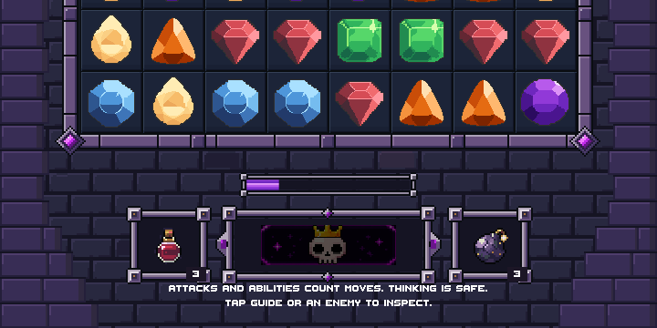
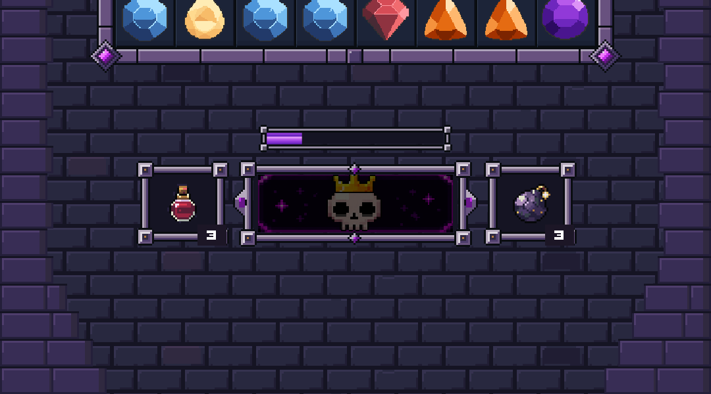
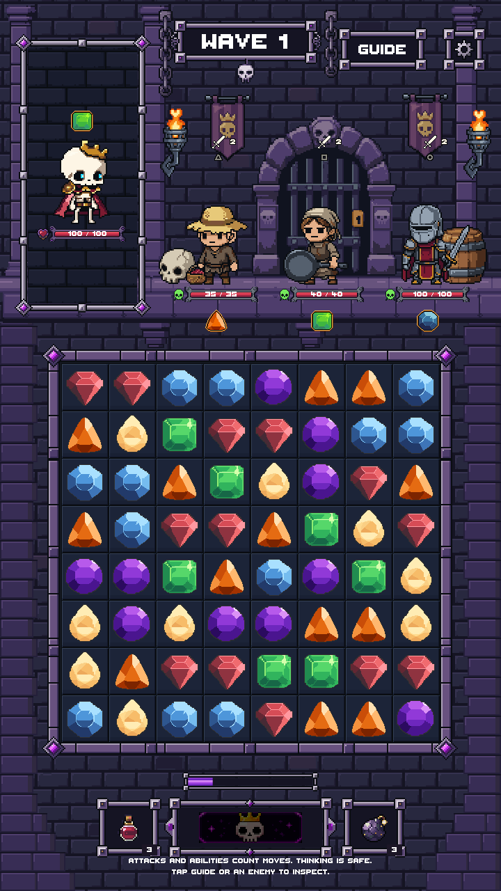

The original side stones and corner additions now share one row alignment. Corners replace the lower rows instead of overlapping them. Both sides meet the physical screen edges; the gameplay safe area is unchanged.
Verification report | Draft PR #205
Before: independent rows and inset side walls
Corrected: aligned rows and flush edges


Artwork reaches the physical display edges. Controls stay in their existing safe area.
Native artwork unchanged. The corner additions remain editor-only for visual review. No merge or physical-device testing.
